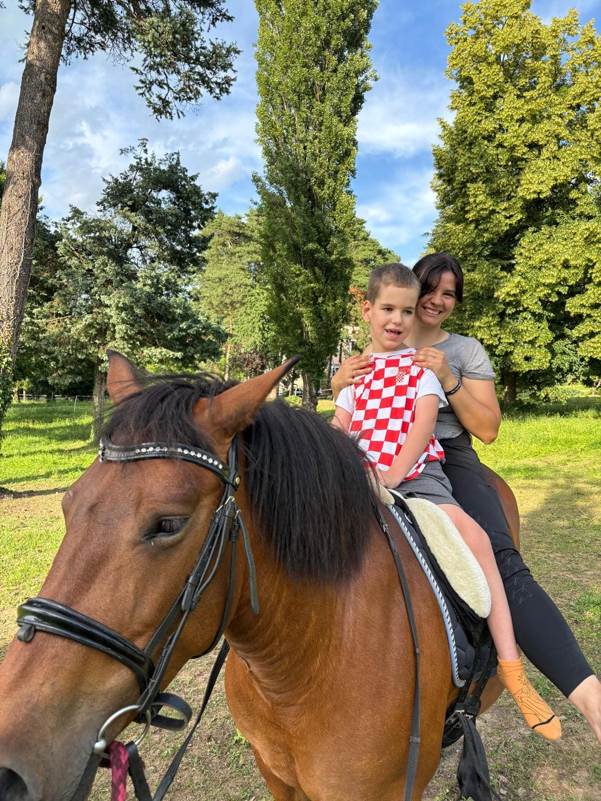

Hipoterapija
Hipoterapija je oblik fizioterapije u kojem terapeut koristi trodimenzionalno kretanje konja u hodu. Ritmično i ponavljajuće kretanje konjskih leđa prenosi se na zdjelicu i trup korisnika na konju te potiče reakcije ravnoteže, posturalnu kontrolu i prilagodbu pokreta.
Provodi se u terapijskom timu, pod stručnim vodstvom hipoterapeuta, uz vodiča konja i posebno odabranog i pripremljenog terapijskog konja.
Kome je namijenjena
Hipoterapija je namijenjena djeci i odraslim osobama s različitim neurološkim, motoričkim, senzornim i psihološkim teškoćama, kod kojih se sudjelovanjem u programu može utjecati na poboljšanje funkcionalnih sposobnosti i ukupnu kvalitetu života.
Najčešće indikacije
- cerebralna paraliza (CP)
- multipla skleroza (MS)
- Downov sindrom
- neuromuskularne bolesti i mišićne distrofije
- posljedice moždanog udara
- traumatske ozljede mozga
- poremećaji ravnoteže i koordinacije
- poremećaji mišićnog tonusa i posturalne kontrole
- poremećaji iz spektra autizma
- kašnjenje u razvoju
Učinci hipoterapije
Hipoterapija je prepoznata kao terapijska metoda koja utječe na motoričke sposobnosti, psihološko-socijalne funkcije i senzornu integraciju kod različitih skupina pacijenata.
Motoričke sposobnosti
- poboljšanje posturalne kontrole i stabilnosti trupa
- razvoj ravnoteže i koordinacije
- regulacija mišićnog tonusa
- poticanje simetričnog držanja tijela
- poboljšanje kontrole glave, trupa i zdjelice
- poticanje selektivnih pokreta i prijenosa težine, što vodi ukupnom poboljšanju funkcionalne pokretljivosti
Senzomotorički učinci
- stimulacija vestibularnog i proprioceptivnog sustava
- razvoj tjelesne sheme
- poboljšanje senzoričke integracije
Jeste li znali? Draganjem i četkanjem konjske dlake i grive pruža se taktilna stimulacija koja potiče razvoj senzorne integracije.
Psihosocijalni učinci
- razvoj samopouzdanja i osjećaja sigurnosti, jedan od najvažnijih učinaka
- veća motivacija za sudjelovanje u terapiji: konj je vrlo velik motivator
- razvoj emocionalne regulacije
- smanjenje osjećaja tjeskobe i straha
- poticanje komunikacije i socijalne interakcije
Svi ti učinci zajedno djeluju na ukupno poboljšanje kvalitete života korisnika.
Kada se ne preporučuje
Pri uključivanju u hipoterapiju provodi se individualna procjena kako bi se utvrdilo postoje li kontraindikacije za njezinu provedbu.
Apsolutne kontraindikacije
- atlantoaksijalna nestabilnost
- artroza kuka
- Arnold-Chiarijeva malformacija II
- hemofilija
- tjelesna težina iznad 80 kg
- patološki prijelomi
- nestabilnost kralježnice
- alergije na dlaku konja i prašinu
- osteogenesis imperfecta
Relativne kontraindikacije
Kod ovih stanja potrebne su posebne mjere opreza.
- epilepsija
- osteoporoza
- subluksacije kuka
- fiksacija kralježnice
- skolioza
- hidrocefalus
- mlađa životna dob (za djecu mlađu od 4 godine radi se individualna procjena)
- spina bifida
- poremećaji ponašanja koji mogu dovesti do potencijalno opasnih situacija
- kardiovaskularne bolesti
Kako izgleda termin
Termin traje 30 minuta, a preporučuje se dolazak jednom do dvaput tjedno.
Za sigurnost korisnika odgovoran je terapeut. Sigurnost se gradi stalnom edukacijom terapeuta, pouzdanom komunikacijom u terapijskom timu, pravilnom pripremom terapijskog konja i pravilnom prilagodbom opreme korisniku.

Što odjenuti
Najvažnije su duge hlače i čvrsta obuća. Ljeti je važna prozračna odjeća i zaštita od komaraca, a zimi se treba obući slojevito i toplo jer se terapija provodi vani.
Moguće je blato, pa su dobrodošle gumene čizme i odjeća koja se smije zaprljati.
Kod padalina i izrazito lošeg vremena termin se odgađa, u dogovoru s odgovornom osobom. Natkriveni prostor gradimo u sklopu izgradnje ranča u Donjoj Bistri.
Prije prvog termina
Prije prvog termina radi se početna procjena. Na njoj se utvrđuje postoje li kontraindikacije, ostvaruje se prvi kontakt s konjem i postavljaju se ciljevi hipoterapije.
Termin procjene dogovara se s hipoterapeutom i individualan je. Ponesite noviji nalaz liječnika, po mogućnosti fizijatra ili psihologa.
Hipoterapija se provodi do najviše 80 kg tjelesne težine. Korisnike iznad te granice možemo uključiti u program terapija pomoću konja s tla.
Tko vodi hipoterapiju
Hipoterapiju provodi terapijski tim: hipoterapeut ili fizioterapeut s edukacijom o terapijama pomoću konja, vodič konja, terapijski konj i, u nekim slučajevima, asistent volonter.
Hipoterapiju vodi Sunčica, hipoterapeut i prvostupnica fizioterapije (bacc. physio.), jedna od osnivačica udruge. Upoznajte cijeli tim.
Gdje i kako do termina
Hipoterapija se provodi u parku Specijalne bolnice Bistra, Bolnička ulica 21, Gornja Bistra.
Termin rezervirate pozivom ili porukom na WhatsApp hipoterapeutu Sunčici, na broj 095 555 4789.
Česta pitanja
Što ako dijete nikada nije bilo na konju?
To nije važno. Na početnoj procjeni uspostavljamo prvi kontakt s konjem i postupno započinjemo s jahanjem.
Jesu li konji sigurni?
Stalnim radom i treningom pripremamo naše konje za hipoterapiju, a mjerama opreza u njihovoj blizini povećavamo sigurnost svih sudionika. Većina naših konja s nama je od malena, izrazito su miroljubivi i željni druženja s ljudima.
Koliko traje termin i koliko se često dolazi?
Termin hipoterapije traje 30 minuta, uz stručni tim hipoterapeuta i vodiča konja. Preporučuje se dolazak jednom do dvaput tjedno, a učestalost dogovaramo individualno, prema potrebama i željama korisnika.
Mora li roditelj biti prisutan?
Ovisno o dobi, potrebama i samostalnosti korisnika, dogovaramo prisutnost roditelja ili pratitelja. Važno nam je da se korisnik osjeća sigurno, prihvaćeno i opušteno.
Kako rezervirati termin?
Pozivom ili porukom na WhatsApp hipoterapeutu Sunčici, na broj 095 555 4789.